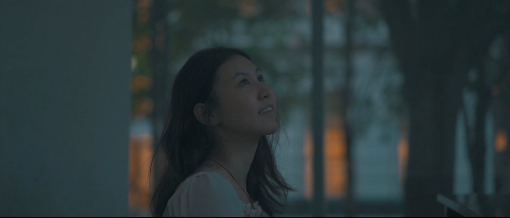

For my Design for Communications class, I wrote a story based on my collge experience and turned it into a short film called RAIN. The setting was my 20th birthday, when I experienced an extreme downfall in my life and almost went depressed. However, the bay area (where I lived) was having much more rain than ever before, unexpectedly. I persoanlly enjoy when it rains, and the later part of the story portrays how the rain inspires me musically through the sound of raindrops and thus creates a unique melody, just for me. During the story-making and film-making process, I learned so much about storytelling, the power of film language, and how to convey a story without voice.
